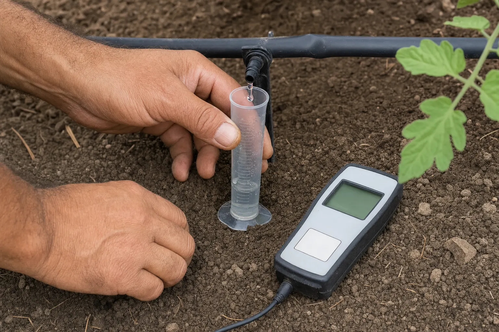

Diagnóstico Predial
Una visita a terreno con mediciones objetivas para identificar la causa real del problema, y un plan concreto para corregirlo.

Productores con un problema definido
Productores de hortalizas o flores con un problema definido —desuniformidad, bajo rendimiento, síntomas persistentes, consumo de agua fuera de lo esperado, salinidad, un sistema de riego que «nunca funcionó bien». También para quien está a punto de invertir y quiere saber en qué estado real parte.
Quien busca una receta rápida
Si buscas una receta de productos sin medición previa, o una visita de una hora para «dar una mirada». Este servicio se sostiene en datos y eso toma tiempo en terreno.
El set de mediciones se define según el problema
No todas las variables se miden en todos los predios. El set se acuerda antes de la visita, a partir de lo que estás observando.
Cuánta agua recibe realmente cada planta y qué porcentaje se está perdiendo.
Cómo se comporta el agua y la raíz en ese suelo específico.
Cuánta agua puede tomar el cultivo sin esfuerzo, y cada cuánto hay que reponerla.
Nivel de sales que la raíz está enfrentando.
Qué nutrientes están realmente disponibles.
Si el sistema hidráulico entrega lo que el diseño prometía.
Si se riega la cantidad correcta, con la frecuencia correcta.
Presencia, nivel y foco real del problema, con muestreo, no a ojo.
Cinco entregables concretos
- Informe técnico en PDF con cada medición, su valor y su interpretación.
- Diagnóstico de causa: qué está provocando el problema y con qué nivel de certeza.
- Plan de ejecución priorizado: qué hacer, en qué orden, con qué criterio técnico y qué se espera de cada acción.
- Registro fotográfico y de coordenadas de los puntos medidos, para poder repetir la medición en el futuro.
- Una reunión de 45 minutos para revisar el informe y resolver dudas.
Cómo es el trabajo, paso a paso
Conversación inicial por WhatsApp
Sin costo, para definir el alcance del trabajo y acordar qué se va a medir.
Visita a terreno
Media jornada a jornada completa según superficie, con mediciones en puntos georreferenciados.
Procesamiento de datos
Análisis de la información y, si corresponde, solicitud de análisis de laboratorio.
Entrega del informe y reunión de revisión
Plazo: 7 días hábiles desde la visita, o desde la llegada de los resultados de laboratorio.
Desde $180.000
Para predios de hasta 5.000 m² con un sistema de riego. Superficies mayores, múltiples sectores hidráulicos o problemas con más de una causa probable se cotizan según alcance.
Análisis de laboratorio aparte, a costo. Referencia de mercado: entre $35.000 y $110.000 por muestra según el set de parámetros.
El plan es tuyo
Lo puedes ejecutar con quien quieras. Si prefieres que la ejecución sea supervisada, el diagnóstico se descuenta del primer mes de Acompañamiento Continuo.
Valores referenciales netos. Se ajustan según superficie, complejidad del sistema y distancia. Los análisis de laboratorio se cotizan aparte y se cobran a costo.
Antes de escribir
¿Necesito tener análisis de suelo previos?
No. Si los tienes, se usan y se incorporan al diagnóstico. Si no los tienes y hacen falta, se solicitan los que correspondan al problema.
¿Cuánto tiempo estás en terreno?
Entre media jornada y una jornada completa, según la superficie y la cantidad de sectores hidráulicos que haya que evaluar. Medir bien toma tiempo: es parte del servicio.
¿Sirve para hidroponía?
Sí. Cambia el set de mediciones: CE y pH de solución, caudal por gotero, oxigenación y temperatura de solución.
¿Vendes insumos?
No. No represento marcas ni recibo comisión por productos recomendados. Es deliberado.
Cuéntame qué está pasando en tu predio.
Describe el problema por WhatsApp y te digo si se resuelve con una evaluación en terreno o si necesitas algo distinto. Sin costo por esa conversación.